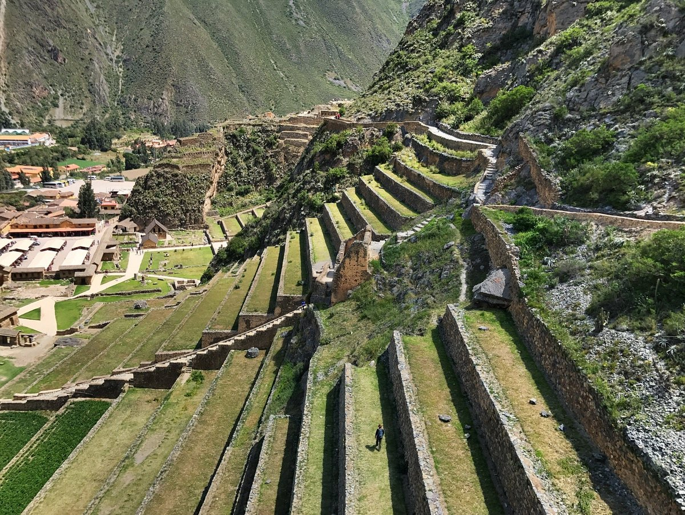
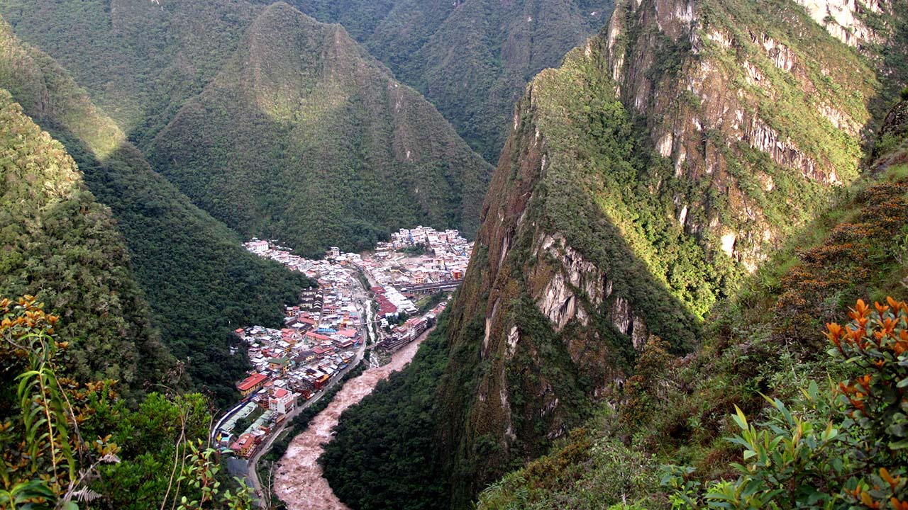
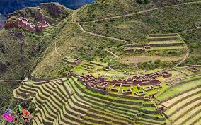
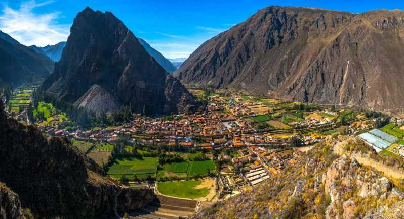

Meu sonho de viagem
Destino perfeito para aventureiros e apaixonados por história e natureza, Machu Picchu proporcionar viagens inesquecíveis para ter contato com a cultura inca, em meio a templos, vales e o visual de tirar o fôlego das montanhas que ficam a cerca de dois metros acima do nível do mar. Aproveite para unir à viagem uma visita à capital peruana Lima e aos povoados Ollantaytambo, Águas Calientes, Urubamba, Pisac e Yucay.
Um dos passeios imperdíveis da região é o tour de trem que percorre rios e vales no entorno do sítio arqueológico de Machu Picchu, assim como a visita ao centro histórico de Cusco, no Peru, e aos restaurantes e ao mercado de artesanato da região do Valle Sagrado e Águas Calientes. Essas e muitas outras aventuras estão garantidas nos pacotes de viagem para Machu Picchu. Se preferir, compre passagens aéreas ou reserve seu hotel com a agência de turismo Meu Sonho de Viagem.
Sem esquecer de reservar um tempo para conhecer o Vale Sagrado dos Incas: ruínas, sítios arqueológicos e curiosidades.
O “turismo inca” é responsável por atrair milhares de visitantes ao Peru vindos dos cantos mais distantes do mundo. E para entender a história dessa civilização, é preciso ir além da cidade sagrada de Machu Picchu.

Foi no Vale Sagrado que o Império Inca se desenvolveu, muito em função das terras férteis que se estendiam próximas às montanhas e rios.
Rastros de suas presenças seguem preservados nas ruínas de templos e antigas cidades, formando ricos sítios arqueológicos como os de Pisac e Ollantaytambo.
Confira nossas dicas sobre o destino e veja também nossos ótimos preços. Boa viagem!
Curiosidades Machu Picchu!
8 curiosidades sobre Machu Picchu, a cidade perdida dos Incas!
-
Ficou esquecida no tempo
-
Teve seus tesouros explorados
-
Protegida por estratégia de guerra
-
Foi descoberta por acaso
-
Tudo foi bem planejado
-
Não é tudo uma coisa só
-
Um refúgio para o imperador
-
Um importante centro religios
Locais de interesse na região do Vale Sagrado dos Incas
-
Ollantaytambo
 -
Águas Calientes
 -
Urubamba

-
Pisac
 -
Yucay
